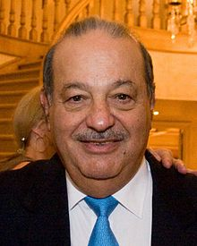

Slim was born on January 28, 1940, in Mexico City, to Julián Slim Haddad
(born Khalil Salim Haddad Aglamaz) and Linda Helú Atta, both Maronite Catholics
of Lebanese descent.
Slim always knew he wanted to be a businessman, and he began to develop his
business and investment acumen at a young age. He received business lessons from
his father Julian, who taught him finance, management and accounting, teaching
him how to read financial statements as well as the importance of keeping
accurate financial records, a practice that Slim carries on to this day.
At the age of 11, Carlos invested in a government savings bond that taught him
about the concept of compound interest. He eventually saved every financial and
business transaction he made into a personal ledger book which he keeps to this
day.[18] At the age of 12, he made his first stock purchase, by purchasing
shares in a Mexican bank. By the age of 15, Slim had become a shareholder in
Mexico’s largest bank.At the age of 17, he earned 200 pesos a week working for
his father's company. He went on to study civil engineering at the National
Autonomous University of Mexico, where he also concurrently taught algebra and
linear programming.
Though Slim was a civil engineering major because of his fascination with
numbers, he also displayed an interest in economics. He took economics courses
in Chile once he finished his engineering degree. Graduating as a civil t
engineering major, Slim has stated that his mathematical prowess and his
background of linear programming was a key factor in helping him gain an edge in
the business world, especially when reading financial statements.
In 2013 Slim's company, Grupo Carso opened Mexico City's Telcel Theater, which
operates in conjunction with his entertainment company, Grupo CIE (Corporación
Interamericana de Entretenimiento), Mexico's equivalent of Live Nation.
In April 2013 Slim entered the business of managing Mexican prisons to expand
the investments of his construction-financing company. Ideal acquired stakes in
two federal prisons from Desarrolladora Homex SAB, a Mexican homebuilder where
Slim's companies will receive 4 billion pesos (US$326 million) within the
agreement. The company ran his son, Marco Antonio Slim would add the prisons to
its portfolio of infrastructure assets among which include toll roads,
hydroelectric dams, and water-treatment plants.
In July 2013 Slim's company America Movill invested US$40 million in Shazam, a
British commercial mobile phone-based music identification service for an
undisclosed share. America Movil partnered with the company to aid its growth
into advertising and television and help the audio recognition service expand in
Latin America.
In November 2013 Slim invested US$60 million in the Israeli startup Mobli, a
company that deals with connections between people and communities corralled
according to different interests.
In December 2013 Slim's private equity fund, Sinca Inbursa, sold its stake in
Mexican pharmaceutical company Landsteiner Scientific. Slim acquired a 27.51
stake in the company in June 2008 and represented 6.6 percent of Sinca's
investment portfolio. The private equity fund's investments are mainly in
transportation and infrastructure and the fund had total market cap of 5.152
billion pesos at the end of 2012.
Slim has also set his sights within the energy industry as well. In 2011, Slim
began buying a 70 percent stake in Geoprocesados SA's Tabasco Oil Co., gaining
access to the Colombian oil market as the country seeks to boost crude and
natural-gas output. Slim began seeking to boost his oil investments in Colombia
because of the country’s open policies on exploration as well as furthering its
commitment to double output by 2020.
Investors have also been drawn to Colombia
because of improved security as well as a clear government regulatory framework
for oil drilling. In 2013, Mexico's national oil and gas company Pemex hired an
offshore drilling rig from the Carso Group. Under the agreement, Pemex will
operate the rig on a seven-year contract and will pay US$415 million. The rig is
owned by Operadora Cicsa, a subsidiary of Carso Group.
The relationship between
Pemex and Slim rans back as early as in 2006, where NOC hired CICSA for the
drilling and completion of over 60 wells in the southern region—covering the
Cinco Presidentes, Macuspana-Muspac, Samaria-Luna and Bellota-Jujo assets – and
for the expansion of a petrochemical plant in Veracruz.
Carso's infrastructure
and construction subsidiary has been awarded with several oil well development
contracts in Pemex's main assets—including Chicontepec—as well as tenders
for the construction of natural gas pipelines and marine platforms. With the
2008 Pemex Law reform, the creation of integrated service contracts and the
perspectives for a future energy reform, Slim has begun seizing business and
investment opportunities in Mexico's oil and gas industry.
CICSA's pipe
manufacturing division Swepomex into a marine platform provider. CICSA has also
acquired majority shares in Oklahoma contractor Bronco Drilling, along with
minority participations in Houston drilling company Allis Chalmers Energy. Slim
controls a 15 percent stake in Bronco, with warrants that could boost the stake
to 20 percent.
He also has a 2.9 percent stake in Allis-Chalmers. 15% of the
country’s main gas operator, Gas Natural Mexico now belong to Sinca Inbursa, a
private equity fund controlled by Slim. Slim Helú has also maintained an
important business presence in Spanish oil company Repsol and its Argentinian
subsidiary YPF, Argentina's largest oil company, where Slim has an 8.4 percent
stake.
On April 23, 2014, Slim took control of Telekom Austria, Austria's biggest phone
carrier, which has telcos in countries such as Bulgaria, Croatia and Belarus,
under a 10-year agreement, was Slim's first successful business acquisition in
Europe.
In a syndicate holding structure the Austrian state holding company
OIAG's 28 percent are combined with Slim's 27 percent ownership. America Movil
will spend as much as US$2 billion to buy out minority shareholders in a
mandatory public offer and invest up to 1 billion euros (US$1.38 billion) into
the company, which it sees as "platform for expansion into central and eastern
Europe". Labor representatives boycotted attending the OIAG supervisory board
meeting for 12 hours criticizing lack of explicit job guarantees.
In July 2014 Slim invested in WellAware, a Texas-based oil and gas software
developer, this investment was also made with former Republican vice president
Dick Cheney. External funding was provided by Activant Capital Group and Slim,
along with participation from strategic investors and WellAware board members Ed
Whitacre.
When Mexico eventually prepared to open its oil and gas sectors to
domestic and foreign private capital for the first time in 75 years, it has been
widely speculated that Slim will play a major role toward contributing to
Mexico's new energy landscape.
Slim's investment in WellAware, whose software
allows oil and gas companies to track wells and pipelines remotely and collates
data for making forecasts, adds to a number of oil-related investments that he
has been making in the past years in Mexico, Latin America and the United States